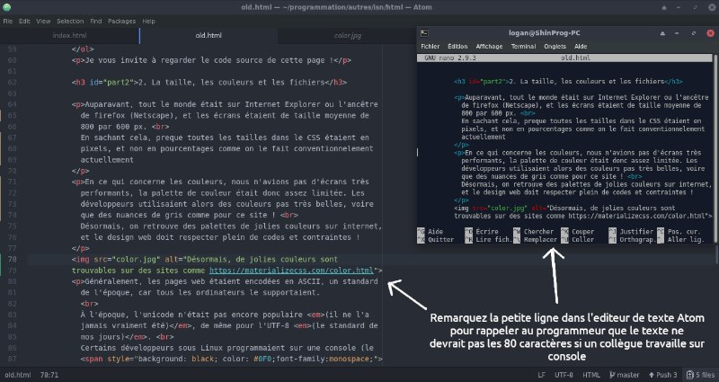
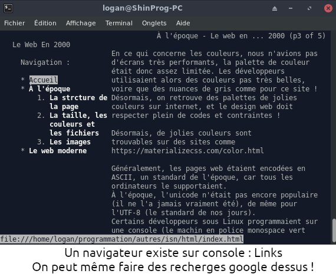

À l'époque
Navigation :
Comme dit en introduction, les ordis étaient vachement lents à l'époque.
Une page web mettait plusieurs minutes à charger, sans compter la
lenteur de l'ordi !
À l'époque, on était au (X-)HTML 4 voire moins. Les balises devaient être en majuscule, presque pas de CSS car tout était dans des attributs.
1. La strcture de la page
Pour créer un site niveau design, beaucoup utilisaient...
Un tableau !!
C'est exactement le cas de ce site !
- Une première ligne de deux colones fusionnées pour le titre
- Une seconde ligne avec :
- Une première colone pour la navigation latérale
- Une seconde colone pour le contenu de l'artcile
- Une troisième ligne de deux colones fusionnées pour le bas de page
Je vous invite à regarder le code source de cette page !
2. La taille, les couleurs et les fichiers
Auparavant, tout le monde était sur Internet Explorer ou l'ancêtre
de firefox (Netscape), et les écrans étaient de taille moyenne de
800 par 600 px.
En sachant cela, preque toutes les tailles dans le CSS étaient en
pixels, et non en pourcentages comme on le fait conventionnelement
actuellement
En ce qui concerne les couleurs, nous n'avions pas d'écrans très
performants, la palette de couleur était donc assez limitée. Les
développeurs utilisaient alors des couleurs pas très belles, voire
que des nuances de gris comme pour ce site !
Désormais, on retrouve des palettes de jolies couleurs sur internet,
et le design web doit respecter plein de codes et contraintes !
Généralement, les pages web étaient encodées en ASCII, un standard
de l'époque, car tous les ordinateurs le supportaient.
À l'époque, l'unicode n'était pas encore populaire (il ne l'a
jamais vraiment été), de même pour l'UTF-8 (le standard de
nos jours).
Certains développeurs sous Linux programmaient sur une console (le
machin en police monospace vert sur fond noir que vous voyez dans
les films de hackers) qui avait une limitation de 80 caractères par
lignes. C'est pour cela que vous verrez des sauts de lignes réguliers
afin que le code soit lisible sur console dans sa globalité !


3. Les images
Les formats d'images sont parmi les choses dans le web qui n'ont fait que de s'améliorer positivement au cours du temps (contrairement au JavaScript qui est devenu certes rapide, mais dont les développeurs ont tendence à trop en abuser, rendant leurs page web beaucoup plus lourdes et lentes)
À l'époque, le format en vogue était le JPEG pour sa taille, et le
PNG (tiens, son site est aussi moche que le mien !).
Avec sa limitation à 127 couleurs (plus faible taille que le JPEG mais
pas de compression), le GIF était le plus populaire pour de petites
images ou des composants de l'interface d'un site. Et en plus,
c'était animé !
Désormais, le format JPEG et PNG ont évolué niveau compression, et
depuis un an, un nouveau format est apparu : le WebP (équivalent
PNG plus léger et pouvant être animé) et le WebM
(alternative au mp4).
Site créé par Logan Tann, ISN LPL-Evry